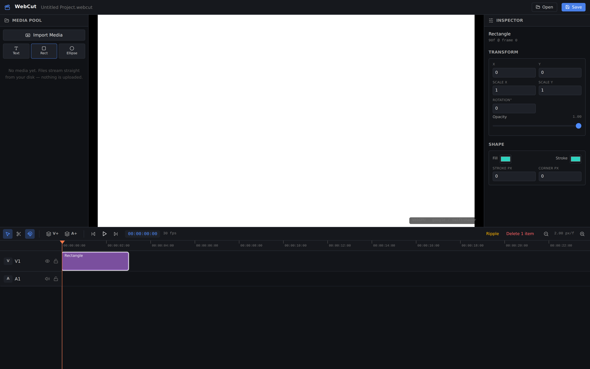

Live demo →WebCut
Video editorA no-install, non-linear video editor that runs entirely in the browser. Your project files and rendered output never leave your computer — decoding, GPU compositing, and green-screen keying all happen locally. Multi-track timeline with frame-accurate scrubbing, razor split and snapping, plus a WebGPU chroma-key with optional neural matting.